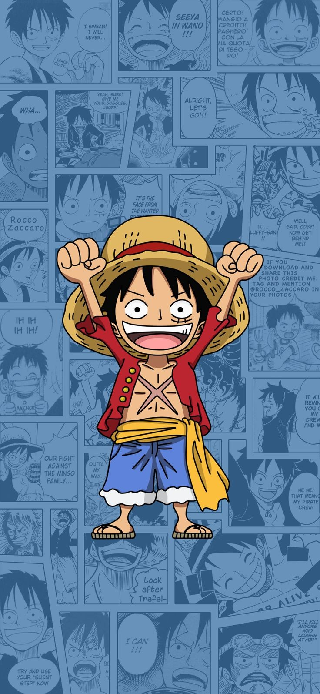

One Piece
One Piece is a Japanese manga series written and illustrated by Eiichiro Oda. The story follows the adventures of Monkey D. Luffy, a boy whose body gained the properties of rubber after unintentionally eating a Devil Fruit. With his pirate crew, the Straw Hats Pirates, Luffy explores the Grand Line in search of the deceased King of the Pirates Gol D. Roger's ultimate treasure known as the "One Piece" in order to become the next King of the Pirates.
Plot
The series focuses on Monkey D. Luffy, a young man made of rubber, who, inspired by his childhood idol, the powerful pirate Red-Haired Shanks, sets off on a journey from the East Blue Sea to find the mythical treasure, the One Piece, and proclaim himself the King of the Pirates. In an effort to organize his own crew, the Straw Hat Pirates, Luffy rescues and befriends a pirate hunter and swordsman named Roronoa Zoro, and they head off in search of the titular treasure. They are joined in their journey by Nami, a money-obsessed thief and navigator; Usopp, a sniper and compulsive liar; and Sanji, an amorous but chivalrous cook. They acquire a ship, the Going Merry, and engage in confrontations with notorious pirates of the East Blue. As Luffy and his crew set out on their adventures, others join the crew later in the series, including Tony Tony Chopper, an anthropomorphized reindeer doctor; Nico Robin, an archaeologist and former Baroque Works assassin; Franky, a cyborg shipwright; Brook, a skeleton musician and swordsman; and Jimbei, a fish-man helmsman and former member of the Seven Warlords of the Sea. Once the Going Merry is damaged beyond repair, Franky builds the Straw Hat Pirates a new ship, the Thousand Sunny, Together, they encounter other pirates, bounty hunters, criminal organizations, revolutionaries, secret agents, and soldiers of the corrupt World Government, and various other friends and foes, as they sail the seas in pursuit of their dreams.
Source: Wikipedia